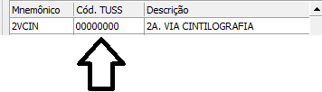
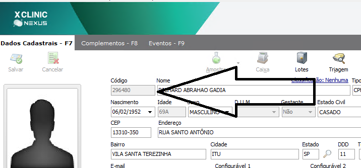

;
Biolabor - Exames
^
subir
CTRL+F Para pesquisa
Se atentar no codigo TUSS dos prociedmentos, devem estar conforme a guia do convenio.

Quando solicitar PERFIL LIPIDICO Lançar eleli - lipi - lipic
Punção aspirativa por agulha fina= PAAF
Punção aspirativa por agulha grossa= Corebyopsia
Quando solicitar Audiometria tonal vocal lançar=aud1,aud3,aud4-Se infantil aud2,aud3,aud4
Quando solicatado Ultrassom doppler membros inferiores/superiores, Sem especificar lançar = Arterial e Venoso
Cintilografia Ossea = Agenda de medicina nuclear
Esofago gastro duodenoscopia= ENDOSCOPIA
Quando solicitado MIBI = MNPRE
Urina 1 com teste de nitrito=Urina 1 já inclui o teste de nitrito
Quando solcitar somente Hepatite B lançar=HBE - HBEAG - HBS - HBSAG - HBCG - HBCM
Eletroencefalo com mapeamento cerebral, lançar somente=MAPEA
CT de quadril=CT coxo femoral
Rx coluna toracica, lançar como=Rx coluna dorsal
Exames que são realizados sem pedido medico
| Exames | Feitos sem pedido no particular |
|---|
| Ultrassonografia em geral(dentre os exames realizados) | Somente Dra. Maria hercidia, Dra. Daiana Dr. Roberto Puty realizam todos.
(Consultar livro para os demais medicos.) |
| Ultrassom obstetrico | Consultar livro do medico |
| Mamografia | Somente em ITU |
| Densitometria Óssea | Somente em Itu |
| Ecocardiograma | Sim |
| Eletrocardiograma | Sim |
| Mapa | Sim |
| Holter | Sim |
| Eletroencefalograma | Sim |
| Estudo Urodinamico | Sim |
| Urofluxometria | Sim |
| Audiometria | Sim |
| Eletroneuromiografia | Sim |
RESULTADOS
Como fazer protocolo e senha para acesso de resultados Manualmente .
| Procoolo |
| Protocolo 1099+ Requisição |
| Senha |
| Numero da unidade + Codigo do paciente |
|
| Unidaddes | N° da unidade |
|---|
| Vergueiro | 8 |
| Campolim | 9 |
| Penha | 7 |
| Zona Norte | 10 |
| Zona Oeste | 12 |
| Eden | 11 |
| Piedade | 14 |
| Salto de Pirapora | 16 |
| Itu | 15 |
|
Codigo do paciente:

|
COLONOSCOPIA Paciente faz uso de medicamentos especificos=
Devido ao medicamento que o paciente faz uso, pode interferir no sedativo utilizado no procedimento, isso pode fazer que o paciente sinta o exame, isso pode causar desconforto e dor.
Por esse motivo aconselhamos que realize com anestesia.
IDADE MÍNIMA PARA ENDOSCOPIA: 12 ANOS
De 12 a 15 anos somente com anestesia.
ENDOSCOPIA + COLONOSCOPIA: AGENDAR NOS 3 ÚLTIMOS HORÁRIOS, CASO ESTEJAM PREENCHIDOS, AGENDAR NOS 3 ANTI PENÚLTIMOS. NÃO AGENDAR EM QUALQUER HORÁRIO VAGO DA AGENDA!!!
*****ENDOSCOPIA AGENDAR ANTES DOS EXAMES DE ENDOS + COLONO*******
!! PACIENTE COM SUSPEITA DE CORONAVIRUS AGENDAR NO ULTIMO HORÁRIO DA AGENDA , A PEDIDO DO DR. BRAZ !!
confirmar IDADE, PESO E ALTURA
Verifiquem o IMC do paciente e caso tenha menos de 40, pode agendar normal e acima de 40 ou inferior a 20 precisa ser com ANESTESIA ou em AMBIENTE HOSPITALAR.
PERGUNTAS PARA ENDOSCOPIA:
POSSUI ALGUMA DOENÇA GRAVE?
(Se sim, consultar o Dr. Braz para verificar a necessidade de agendar a pré consulta)
POSSUI PROBLEMAS CARDÍACOS?
(Se sim, apenas com carta feita pelo cardiologista responsável)
FAZ USO DE MEDICAMENTOS PARA DORMIR? CALMANTES? ANTIDEPRESSIVOS?
(Se sim, informar ao paciente que os medicamentos em uso podem interferir no sedativo utilizado na endoscopia, o que pode causar incômodo e dor. DAR A OPÇÃO DE REALIZAR COM ANESTESIA, SE FOR ACEITO, AGENDAR A PRÉ CONSULTA COM ANESTESISTA)
*ANOTAR TODAS AS RESPOSTAS NAS OBSERVAÇÕES!!!
*PACIENTE INTERNADO: SEMPRE VERIFICAR COM O DR. BRAZ OU VANESSA ENFERMEIRA ANTES DE FAZER O AGENDAMENTO!
COLONOSCOPIA:
- PACIENTES COM 65 ANOS OU MAIS: NECESSÁRIO AGENDAR PRÉ CONSULTA COM A ENFERMEIRA VANESSA. (AGENDA DE PRÉ CONSULTA)
ENDOSCOPIA + COLONOSCOPIA: AGENDAR NOS 3 ÚLTIMOS HORÁRIOS, CASO ESTEJAM PREENCHIDOS, AGENDAR NOS 3 ANTI PENÚLTIMOS. NÃO AGENDAR EM QUALQUER HORÁRIO VAGO DA AGENDA!!!
ATENÇÃO: MARCAR NUMERO DE CARTEIRINHA CASO SEJA CONVENIO, INFORMAÇÕES DA GUIA, E DATA DO PEDIDO MÉDICO. ANOTAR NAS OBSERVAÇÕES!
Orçamento Toxicologico Detran
*Orçamento:*
° Particular: R$ 379,80
° Cartão Biolabor: R$189,90
*Prazo de entrega:*7 dias úteis
(Valores válidos por 3 dias úteis, conforme PDF)